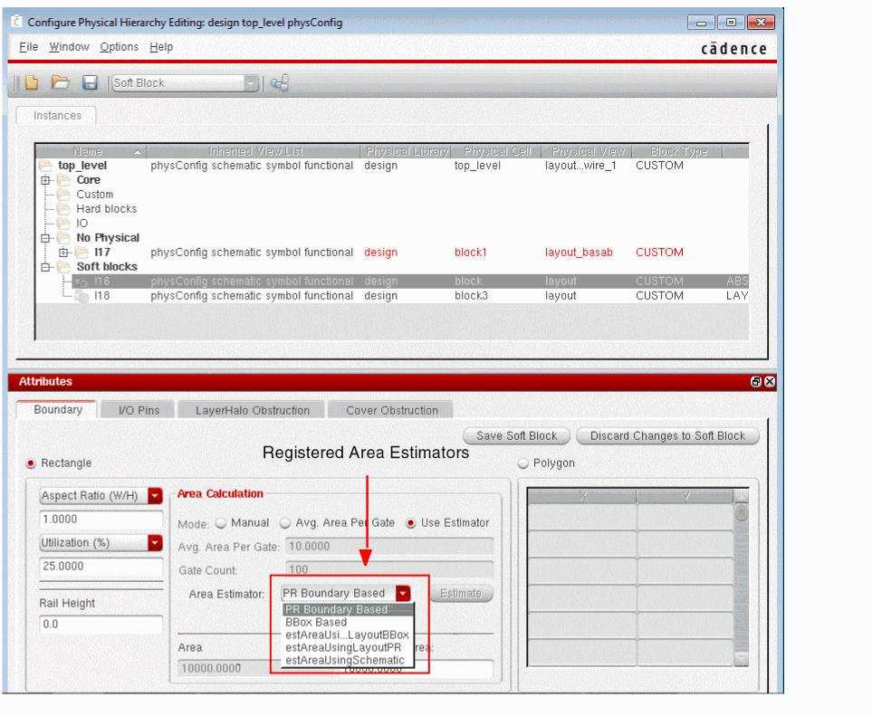
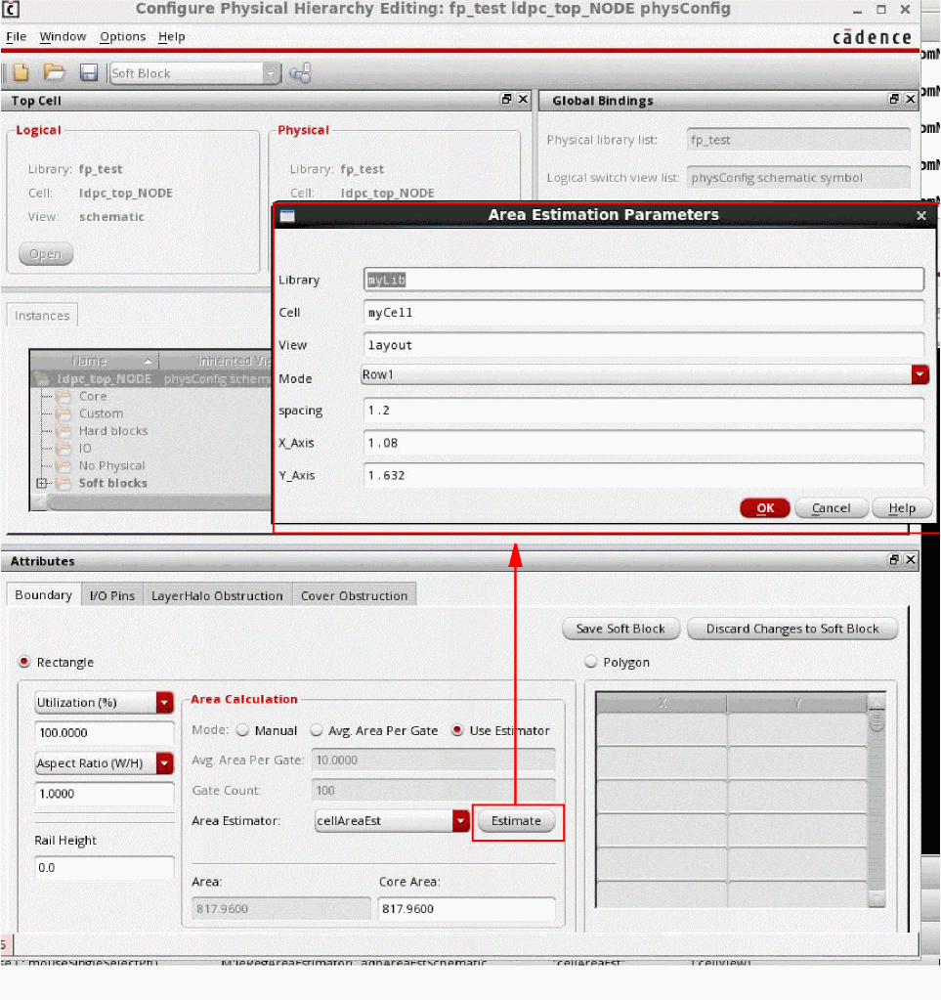
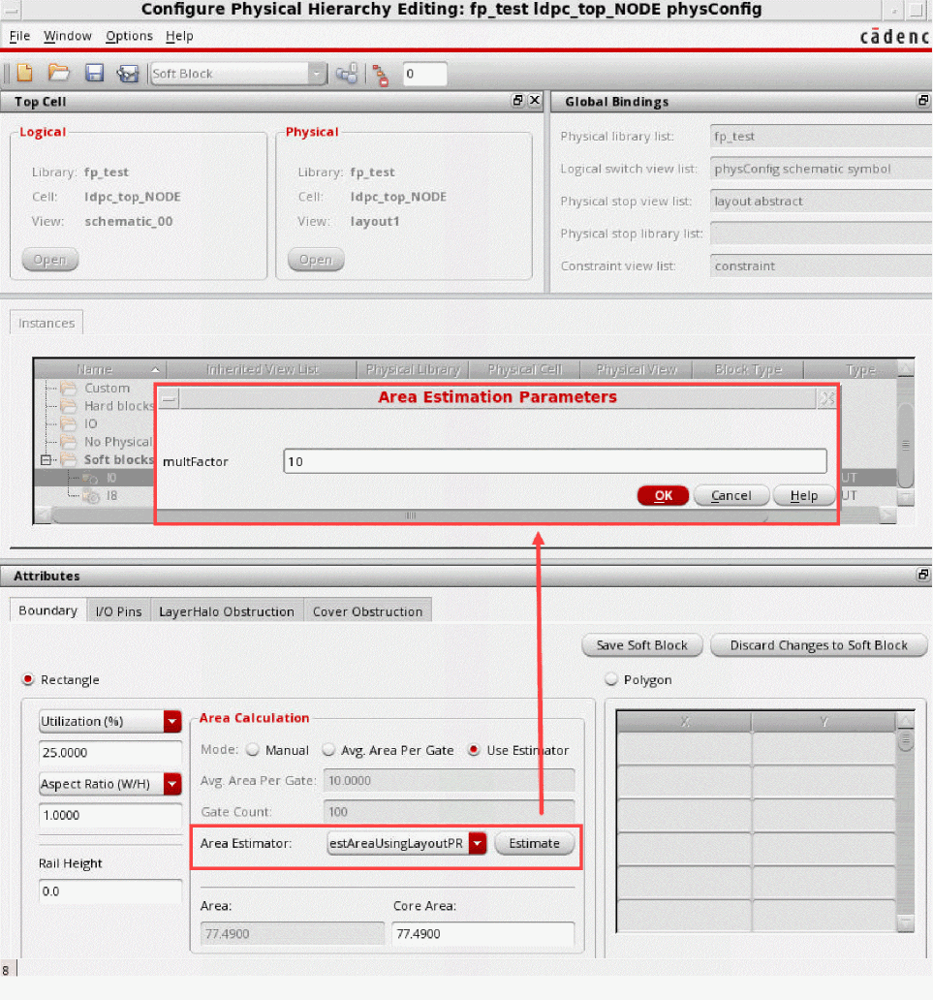

Area Estimation using the Configure Physical Hierarchy Window
The area estimation framework in Floorplanner lets you analyze an acceptable area utilization percentage and derive the size of a rectangular area boundary for a cellview or virtual hierarchy. To do this, you define your own area estimation function. You can directly type the area estimation function in the CIW or define it in the .cdsinit file. You can register an area estimation function using the leRegAreaEstimator SKILL function. The area estimation function can be called using the Area Estimation Parameters form in Configure Physical Hierarchy (CPH) window. The registered area estimator registration function is displayed in the Area Estimator drop-down list in the Boundary tab of the CPH window in Soft Block mode.
To add an area estimator function in the CPH window:
-
From the Layout XL (or GXL) window, choose Launch – Configure Physical Hierarchy. The CPH window is displayed.
 - Select an estimator from the Area Estimator drop-down list.
-
Click Estimate in the CPH window, when this area estimator function is called.
The Area Estimation Parameters form is displayed, where the parameters can be entered dynamically.
If you have defined multFactor parameter in the leRegAreaEstimator SKILL function, ensure to register it throughleRegAreaEstimator([l_parameterNameValuePairs];):
The Area Estimation Parameters form is displayed with multFactor field in this scenario, where the parameters can be entered dynamically.
The return value is either a floating number or nil. - Click OK.
The registered function is called from the CPH window.
Related Topics
Area Estimation Function Registration
Registering an Area Estimation Function to Adjust a Virtual Hierarchy Area Boundary
Registering an Area Estimation Function to Adjust a Soft Block PR Boundary
Return to top